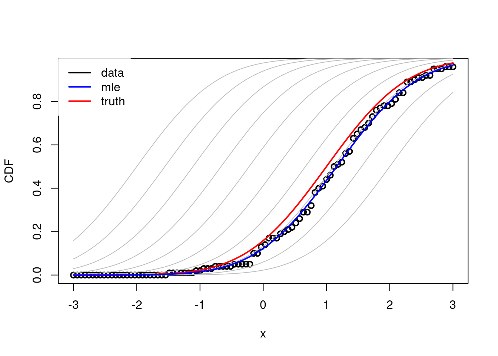
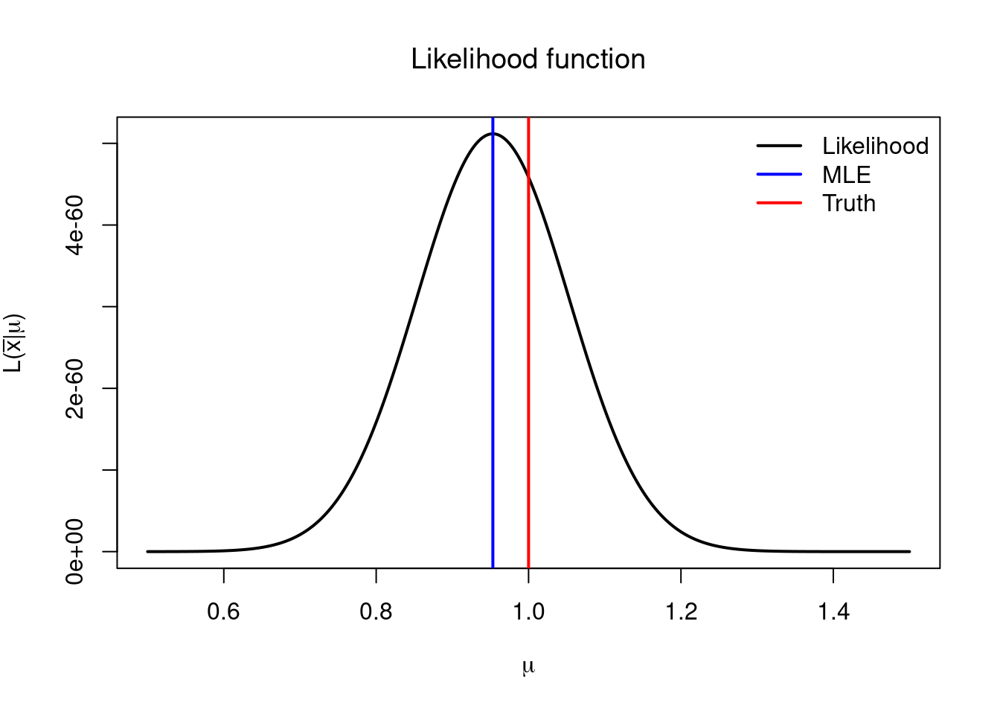

4 Introduction to Statistics
4.1 Big Picture
4.1.1 Data
- Random variables live in the theoretical (mathematical) world
- We assume that the variability of the data is adequately consistent
with the variability that would occur in a random sample from a given
distribution/random process.
- Data itself is assumed to be random variables so that we can focus on the best way to reason from random variables to inferences about (theoretical) parameters.
- Beware, often the language of statistics takes a convenient shortcut by blurring the distinction between data and random variables.
4.1.2 Models
- Incorporate theoretical assumptions and subjunctive statements (of the form if … then …).
- Inference is based on what would happen if the data were to be random variables distributed according to the statistical model.
- The modelling assumption would be reasonable if the model were to describe accurately the variation in the data.
- Typically one considers real observed data \(\bar{x}=(x_1,\dots,x_n)\) on the one hand, and random vectors \((X_1,\dots,X_n)\) whose distribution depends on a parameter \(\theta\) on the other. Then one assumes that the observed data \(\bar{x}\) is actually a realization of the random vector \(\bar{X}\), i.e one assumes that we have observed the event \(X_1=x_1,\dots,X_n=x_n\) thus effectively considering the observed data \(\bar{x}\) as random variables.
4.1.3 Probability
- Aleatoric Probability: The use of probability to describe variation. E.g. “The probability of rolling a 3 in a fair dice is 1/6”.
- Epistemic Probability: The use of probability to express knowledge (or beliefs). E.g. “I’m 90% sure that the capital of México is CDMX”.
4.2 Likelihood Function
4.2.1 Definition
Assume that, for each \(\theta\), if \(\bar{X}=(X_1,\dots,X_n)\) is a random vector whose distribution is given by \(\mathcal{P}_{\theta}\), then \(\bar{X}\) has density \(f(\bar{x}\vert \theta)\).
Fix \(\bar{x}=(x_1,\dots,x_n)\).
The likelihood function \(L(\bar{x}\vert \theta)\) based on \(\bar{x}\) is the function of \(\theta\) given by \[L(\bar{x} \vert \theta) = f(\bar{x}\vert \theta).\]
\
Example 4.1 (I.i.d Gamma) Consider the family of probability models for a random vector \(\bar{X}\) of size \(n\) whose entries are all independent and identically distributed \(Gamma(\alpha,\beta)\). Then for any vector \(\bar{x}=(x_1,\dots,x_n)\), and using the independence assumption for the first equality, we have \[ \begin{aligned} L(\bar{x}\vert \alpha,\beta) &= \prod_{i=1}^n L(x_i\vert \alpha,\beta) \\ &= \left(\frac{\beta^\alpha}{\Gamma(\alpha)}\right)^n \prod_{i=1}^n x_i^{\alpha-1}e^{-\beta x_i}\\ &= \left(\frac{\beta^\alpha}{\Gamma(\alpha)}\right)^n \left(\prod_{i=1}^n x_i\right)^{\alpha-1} e^{-\beta\sum_{k=1}^n x_i}. \\ \end{aligned}. \]
4.2.2 Maximum Likelihood Estimator MLE (Point Estimate)
The likelihood functions can be used to obtain a point estimate that typically has very desirable properties.
Example 4.4 Let \(\bar{X}=(X_1,\dots,X_n)\) be i.i.d \(normal(\mu,1)\). Then, for any sample point \(\bar{x}\), the likelihood function based on \(\bar{x}\) is given by
\[ L(\bar{x}\vert \theta) = \frac{1}{(2\pi)^{n/2}} e^{-\frac{1}{2}\sum_{i=1}^n(x_i-\mu)^2}. \]
The equation \[ \frac{d}{d\mu}L(\bar{x} \vert \mu) = 0 \] reduces to \[ \sum_{k=1}^n(x_k-\mu) = 0 \] which has solution \[ \hat{\mu}(\bar{x}) = \frac{1}{n} \sum_{k=1}^N x_k = \tilde{x}. \]## Create (vectorized) likelihood function
lnorm <- Vectorize( FUN = function(data, mean = 0, sd = 1){
return(prod(dnorm(data, mean = mean, sd = sd)))
},
vectorize.args = c("mean", "sd"))
# Generate random sample
data <- rnorm(100, mean = 1, sd = 1) # mu = 1 is the `real' parameter
mle <- mean(data)
# Visualize likelihoods under different mus
mus <- seq(0, 2, length.out = 100)
lmus <- lnorm(data, mean = mus)
plot(x = mus, y = lmus, xlab = TeX("$\\mu$"), ylab = "Likelihood", lwd = 2, col = "black")
abline(v = 1, lwd = 2, col = "red")
abline(v = mle, lwd = 2, col = "blue" )
legend("topright", legend = c("MLE", "Truth"), col = c("blue", "red"), lwd = 2, bty = "n")# Visualize estimated density VS normal densities under different mus
plot(density(data), xlim = c(-3,3), ylim = c(0,0.5), lwd = 3, xlab = "x", ylab = "density", main = NA)
x <- seq(-3,3,length.out = 100)
mus <- seq(-2, 2, length.out = 5)
ignore <- mapply(lines, y = lapply(mus, dnorm, x = x, sd = 1),
MoreArgs = list('x' = x, 'col' = "gray", 'lwd' = 1))
abline(v = mus, lwd = 1, col = "gray")
lines(x, dnorm(x, mean = 1, sd = 1), col = "red", lwd = 2)
abline(v = 1, lwd = 2, col = "red")
lines(x, dnorm(x, mean = mle, sd = 1), col = "blue", lwd = 2)
abline(v = mle, lwd = 2, col = "blue")
legend("topleft", box.col = "white", legend = c("data", "mle", "truth"), col = c("black", "blue", "red"), lwd = 2)# Visualize estimated cdf VS normal cdfs under different mus
datacdf <- ecdf(data)
x <- seq(-3,3,length.out = 100)
plot(x = x, y = datacdf(x), xlim = c(-3,3), lwd = 2, xlab = "x", ylab = "CDF", main = NA)
mus <- seq(-2, 2, length.out = 10)
ignore <- mapply(lines, y = lapply(mus, pnorm, q = x, sd = 1),
MoreArgs = list('x' = x, 'col' = "gray", 'lwd' = 1))
lines(x, pnorm(x, mean = 1, sd = 1), col = "red", lwd = 2)
lines(x, pnorm(x, mean = mle, sd = 1), col = "blue", lwd = 2)
legend("topleft", box.col = "white", legend = c("data", "mle", "truth"), col = c("black", "blue", "red"), lwd = 2)
As discussed in Section 4.1 the value \(\bar{x}\) is typically equated with the experimentally observed data. However, in the probabilistic world \(\bar{x}\) is interpreted as just a ‘realization’ of the random vector \(\bar{X}\). Now observe that \(\hat{\theta}(\bar{x})\), the MLE for \(\theta\), is a function of \(\bar{x}\), and if we now think of \(\bar{x}\) as a realization of \(\bar{X}\), then in fact we may consider the random variable \(\hat{\theta}(\bar{X})\). Now, what does this mean in our statistical framework? Well, if a particular value \(\bar{x}\) is equated with the experimentally observed data, then we can think of the experiment as a probabilistic procedure that outputs a random value \(\bar{x}\) every time it is performed, thus we think of the experiment as a sampling procedure of \(\bar{X}\) under the ‘true’ distribution of \(\bar{X}\). Thus, our estimation, in particular the MLE point estimate, is random, is really a random variable, so that we may study the probability that we provide a good estimate for the real distribution of \(\bar{X}\), or the probability that we fail to do so. In the particular case of the MLE point estimate we may, for example, study the difference of \(\hat{\theta}(\bar{X})\) for and the true value of \(\theta\), say \(\theta_0\).
# Generate 1000 random samples of size 100 each
mu0 <- 1
datas <- matrix(rnorm(10000*100, mean = mu0, sd = 1), nrow = 100)
# Compute MLE for each sample of size 100
mles <- colMeans(datas)
# Visualize MLE density and compare with true value mu0
# Estimated density
plot(density(mles), lwd = 2, xlab = TeX("$\\hat{\\mu}(\\bar{x})$"), ylab = "Density", main = TeX("$\\hat{\\mu}(\\bar{X})$ density"))
# True density
x <- seq(-0.7, 1.5, length.out = 1000)
lines(x = x, y = dnorm(x, mean = mu0, sd = sqrt(1/100)), lwd = 2, col = "red")
legend("topleft", legend = c("MLE sample density", "MLE true density"), col = c("black", "red"), lwd = 2, bty = "n")
abline(v = mean(mles), col = "blue", lwd = 2)
abline(v = mu0, col = "black", lwd = 2)
## Min. 1st Qu. Median Mean 3rd Qu. Max.
## 0.6539 0.9322 0.9992 0.9995 1.0663 1.3720## [1] 0.09999539Thus, for example, we may compute the probability, under the assumption that the true value of \(\mu\) is \(\mu_0\), that \(\left\lvert \hat{\mu}(\bar{X}) - \mu_0 \right\rvert> a\), we have \[ \mathbb{P}(\left\lvert \hat{\mu}(\bar{X}) - \mu_0 \right\rvert> a) = \int_{\mu_0-a}^{\mu_0+a} \sqrt{\frac{n}{2\pi}} e^{-\frac{n(\hat{\mu} - \mu_0 )^2}{2}} d\hat{\mu} \]
4.3 Hypothesis testing
The goal of a hypothesis test is to decide, based on a sample from the population, which of two complementary hypothesis is true.
\
Definition 4.5 A hypothesis testing procedure as rule that sepecifies:
- For which sample values the decision is made to accept \(H_0\) as true.
- For which sample values \(H_0\) is rejected (in ``acceptance’’ of \(H_1\)).